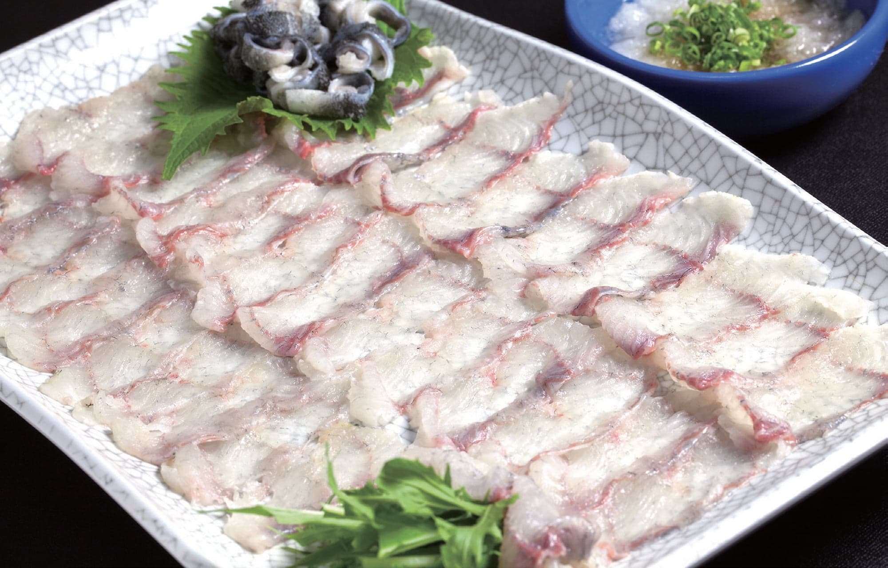
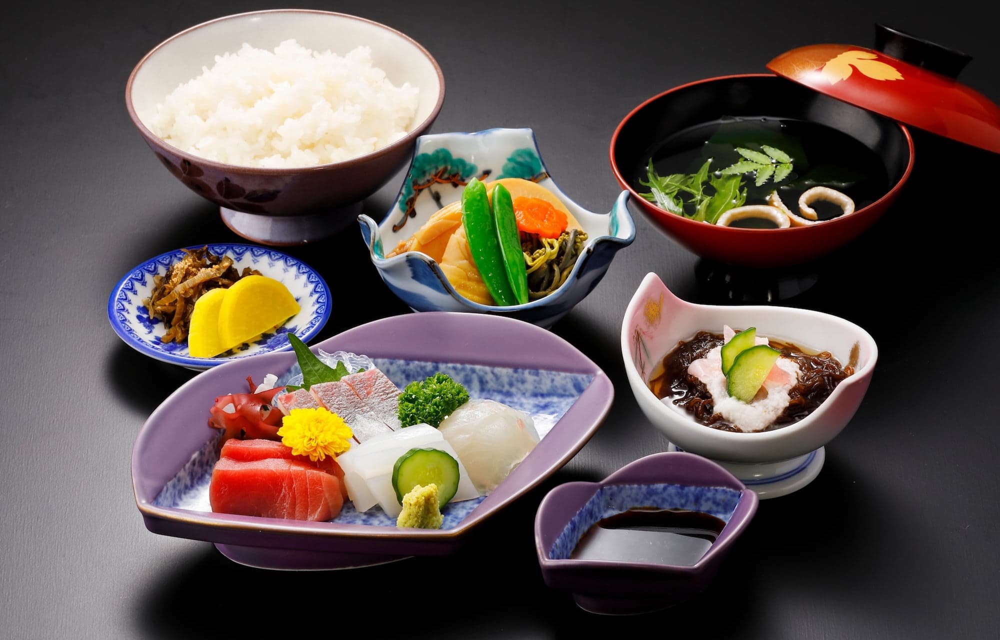
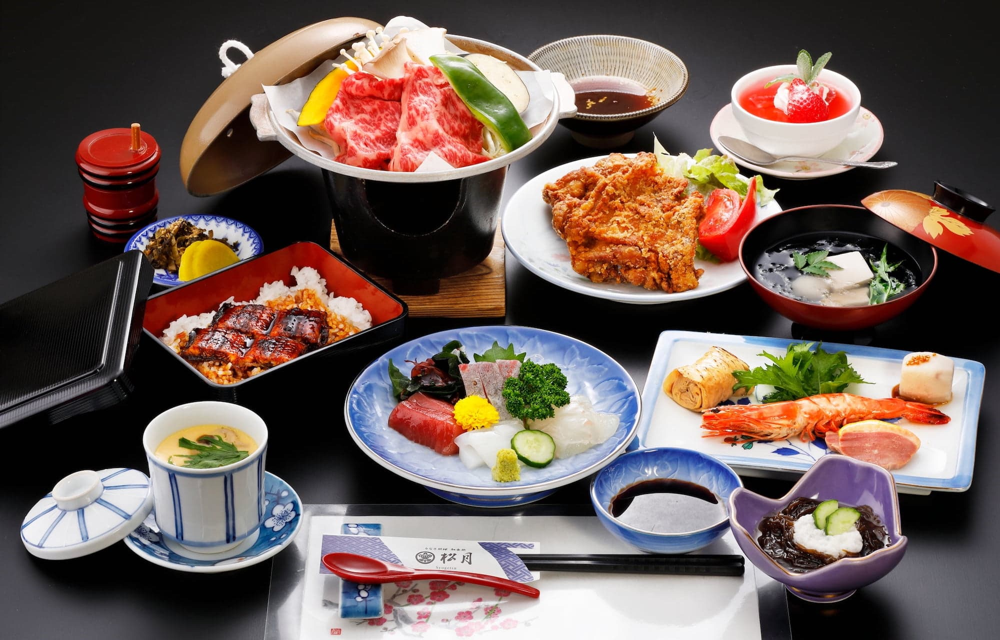

創業80年余、和食と鰻の本格炭火焼を提供しております。
和食全般に加え、創作料理、名物鰻の刺し身、洗い、肝の塩辛などの珍味もご用意しております。
皆様どうぞごゆっくりとおくつろぎくださいませ。
お知らせ
- 2021年9月4日ホームページを公開しました。
お品書き
※表示価格は税込みです。
※季節により写真と内容が変わる事があります。
うなぎ定食 <松>2,640円
カリッと焼き目のついたうなぎの蒲焼きをご堪能ください。
セイロ蒸し <松>2,200円
うなぎの蒲焼きと錦糸卵をタレに絡めたご飯の上に乗せて蒸し上げました。
うな丼1,650円
うなぎの蒲焼きとタレの絡んだご飯。山芋との食感もお楽しみください。

うなぎの刺身3,300円
当店人気の珍味とも言える刺身。フグの食感にも似た脂ののった味が好評です。

刺身定食1,650円
刺身盛り・小鉢2品・お吸物・白飯・香の物

会席料理3850円
お祝い・法要等の会席料理もご予約承ります。四季折々の旬の食材をお楽しみください。
- 住所
- 〒838-1511 福岡県朝倉市杷木池田716-7
- 電話番号
- 0946-62-0381
- 0946-62-0381
- アクセス
- 杷木ICから車で約2分
- 杷木バスセンターから徒歩約3分
- 定休日
- 不定休
- 営業時間
- 11:30〜15:00 / 17:00〜22:00（ラストオーダー 21:30）
- 駐車場
- 有り